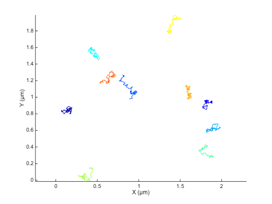
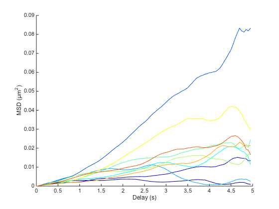
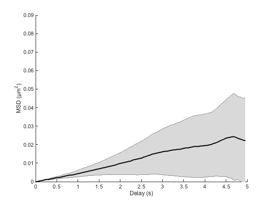
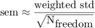
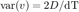

Brownian motion.
In this part, we simulate plain, 2D diffusive behavior of small particles subjected to Brownian motion at a given temperature. They are the most easy to simulate, as displacements are totally uncorrelated over time, and are distributed following a Gaussian PDF.
Contents
Generating fake trajectories.
Let's first generate a set of trajectories. Here are the simulation parameters.
SPACE_UNITS = 'µm'; TIME_UNITS = 's'; N_PARTICLES = 10; N_TIME_STEPS = 100; N_DIM = 2; % 2D % Typical values taken from studies of proteins diffusing in membranes: % Diffusion coefficient D = 1e-3; % µm^2/s % Time step between acquisition; fast acquisition! dT = 0.05; % s, % Area size, just used to disperse particles in 2D. Has no impact on % analysis. SIZE = 2; % µm
Following Einstein equation on the previous page, displacements follow a Gaussian PDF with standard deviation given by:
k = sqrt(2 * D * dT);
Let's generate the tracks. @msdanalyzer imposes that the tracks you give to it are formatted in the following way: [ Ti Xi Yi ...]. So if we generate a track with 50 measurements in a 2D diffusion problem, we must generate a 50 x 3 double array per particle.
tracks = cell(N_PARTICLES, 1); for i = 1 : N_PARTICLES % Time time = (0 : N_TIME_STEPS-1)' * dT; % Initial position X0 = SIZE .* rand(1, N_DIM); % Integrate uncorrelated displacement dX = k * randn(N_TIME_STEPS, N_DIM); dX(1, :) = X0; X = cumsum(dX, 1); % Store tracks{i} = [time X]; end clear i X dX time X0
To instantiate the analyzer, we must first provide it with the dimensionality of the problem, the space units and the time units. The two later arguments are just used for convenience.
ma = msdanalyzer(2, SPACE_UNITS, TIME_UNITS);
To pass the tracks we created above, we must use obj = obj.doSomething notation, for @msdanalyzer is a per-value class. That is: if you do not catch the object returned, your modifications are lost. More precisely:
% This does not work: ma.addAll(tracks); % This works: ma = ma.addAll(tracks); % Indeed: disp(ma)
msdanalyzer with properties:
TOLERANCE: 12
tracks: {10x1 cell}
n_dim: 2
space_units: 'µm'
time_units: 's'
msd: []
vcorr: []
lfit: []
loglogfit: []
drift: []
@msdanalyzer ships convenience methods to investigate its content. We can plot how the trajectories look like:
ma.plotTracks; ma.labelPlotTracks;
A zoomed version show the stochastic nature of the trajectories. MSD analysis helps making sense of it.

Basic analysis.
From there, the MSD analysis is trivial:
ma = ma.computeMSD; ma.msd
Computing MSD of 10 tracks... Done.
ans =
[100x4 double]
[100x4 double]
[100x4 double]
[100x4 double]
[100x4 double]
[100x4 double]
[100x4 double]
[100x4 double]
[100x4 double]
[100x4 double]
A note on delays and floating-point accuracy.
Note that the delays are binned together properly. Because of floating-point accuracy limit, computing the delays without care would generate erroneous curves. For instance, floating point errors would make the delay between the 2nd frame and the 1st frame different from the delay between the 3rd frame and the 2nd frame. To illustrate this, here is how delays are calculated without taking floating point accuracy limit in consideration. If we consider N time-points:
t = (0 : N_TIME_STEPS)' * dT;
The calculation of all possible delays is the following:
[T1, T2] = meshgrid(t, t); all_delays = unique( abs(T1 - T2) );
We expect to have N different delays (0 included), but got:
fprintf('Found %d different delays.\n', numel(all_delays));
Found 366 different delays.
Some of them look like duplicates:
disp(all_delays(1:9));
0
0.0500
0.0500
0.0500
0.0500
0.0500
0.0500
0.0500
0.0500
@msdanalyzer protects itself against this by having a tolerance for binning delays together. This tolerance is by default equal to 10e-12, which is enough to properly circumvent the accuracy problem:
fprintf('For %d time-points, found %d different delays.\n', N_TIME_STEPS, size( ma.msd{1}, 1 ) );
For 100 time-points, found 100 different delays.
Plotting MSD curves.
To plot the resulting individual MSD curves, use:
figure ma.plotMSD;
The plot is quite crowded, and every curve seems to have its own shape. We actually need to go one step further, and compute the ensemble mean: the average over all curves:
cla ma.plotMeanMSD(gca, true)
This method computes the weighted average over all MSD curves. Weights are taken to be the number of averaged delay in individual curves, which favors short delays. If you need to have a good confidence over larger delays, you need to sample particle trajectories for a much longer time.
The grayed area represents the weighted standard deviation over all MSD curves. We would like to have a notion of the confidence on this mean, such as the standard error of the mean; unfortunately there is no consensus as how to define it for weighted means. We can approach it using the formula

The method getMeanMSD returns a vector with all you need:
help msdanalyzer.getMeanMSD
GETMEANMSD Compute the weighted mean of all MSD curves. msd = obj.getMeanMSD computes and return the weighted mean of all MSD curves stored in this object. All possible delays are first derived, and for each delay, a weighted mean is computed from all the MSD curves stored in this object. Weights are set to be the number of points averaged to generate the mean square displacement value at the given delay. Thus, we give more weight to MSD curves with greater certainty (larger number of elements averaged). Results are returned as a N x 4 double array, and ordered as following: [ dT M STD N ] with: - dT the delay vector - M the weighted mean of MSD for each delay - STD the weighted standard deviation - N the number of degrees of freedom in the weighted mean (see http://en.wikipedia.org/wiki/Weighted_mean) msd = obj.getMeanMSD(indices) only takes into account the MSD curves with the specified indices.
So we can plot something like:
mmsd = ma.getMeanMSD;
t = mmsd(:,1);
x = mmsd(:,2);
dx = mmsd(:,3) ./ sqrt(mmsd(:,4));
errorbar(t, x, dx, 'k')

Just to recapitulate, because now we are doing averages of averages:
- The MSD curves contained in ma.msd are already time-averaged curves. There is one such curve per particle, and the curve is a characteristic of the particle it is defined for. For each delay dt, the square-displacement is averaged over all possible combination of t1 and t2 that yields dt=t2-t1. And by the way, this is why we call these curves mean square-displacement. And this is also why there is more confidence towards short delays: there are more points in the average than for long delays.
- The mean MSD (a bit of a repetition here) that you get through ma.getMeanMSD is the ensemble average: It is defined for a set of particles, by taking the weighted mean over all particles for a given delay. It is a characteristic of the dynamical process sampled by the particles. If the particles do not sample the same process, e.g. they have different diffusion property, the average MSD curve looses its meaning and relevance.
Estimating the diffusion coefficient.
But of course, the only proper way of analyzing this curve is through fitting. The following instructions require the curve fitting toolbox.
[fo, gof] = ma.fitMeanMSD;
plot(fo)
ma.labelPlotMSD;
legend off
Estimating D through linear weighted fit of the mean MSD curve. D = 1.099e-03 with 95% confidence interval [ 1.086e-03 - 1.111e-03 ]. Goodness of fit: R² = 0.999.

By default, the fit is only made on the first 25% of the curve, following the recommendations of [3]. We may be slightly off depending on your run. The R² value is close to 1, indicating that the average MSD curve is indeed a line. But since we sampled only 10 particles, we cannot hope to have a good confidence on our results.
Another approach is to fit individual MSD curves and take the mean of the resulting parameters. This method fitMSD actually updates the object:
ma = ma.fitMSD;
Fitting 10 curves of MSD = f(t), taking only the first 25% of each curve... Done.
We can compute the value for D, taking in the mean the fit results only if they were good enough. That is: if their R² is above let's say 0.8:
good_enough_fit = ma.lfit.r2fit > 0.8; Dmean = mean( ma.lfit.a(good_enough_fit) ) / 2 / ma.n_dim; Dstd = std( ma.lfit.a(good_enough_fit) ) / 2 / ma.n_dim; fprintf('Estimation of the diffusion coefficient from linear fit of the MSD curves:\n') fprintf('D = %.3g ± %.3g (mean ± std, N = %d)\n', ... Dmean, Dstd, sum(good_enough_fit));
Estimation of the diffusion coefficient from linear fit of the MSD curves: D = 0.00112 ± 0.000513 (mean ± std, N = 10)
Particle velocities
Qian et al. [2] (equations 10 & 11) derived a way to estimate the diffusion coefficient from the distribution of instantaneous velocities. If v is the instantaneous velocity vector, then

A word of caution with this expression: Here v is the vector itself, with several components (two in 2D), not the vector magnitude. For this expression to be valid, we must take the variance of one of the vector component (vx or vy). Having several components just yield another estimate. Since we are in 2D, we will have two estimates, that we can average together to refine the overall estimate:
% Retrieve instantaneous velocities, per track trackV = ma.getVelocities; % Pool track data together TV = vertcat( trackV{:} ); % Velocities are returned in a N x (nDim+1) array: [ T Vx Vy ...]. So the % velocity vector in 2D is: V = TV(:, 2:3); % Compute diffusion coefficient varV = var(V); mVarV = mean(varV); % Take the mean of the two estimates Dest = mVarV / 2 * dT; fprintf('Estimation from velocities histogram:\n') fprintf('D = %.3g %s, real value was %.3g %s\n', ... Dest, [SPACE_UNITS '²/' TIME_UNITS], D, [SPACE_UNITS '²/' TIME_UNITS]);
Estimation from velocities histogram: D = 0.00093 µm²/s, real value was 0.001 µm²/s
Wrapping up.
This was the most simple simulations we could run. Particles were in small number, they all appeared at the same time and were detected in every frame, not missing a single one. In the next parts, we will approach other problem types, building up complexity, and use other techniques for analysis, still based on the MSD curves.